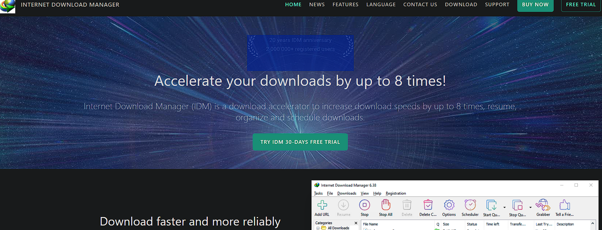
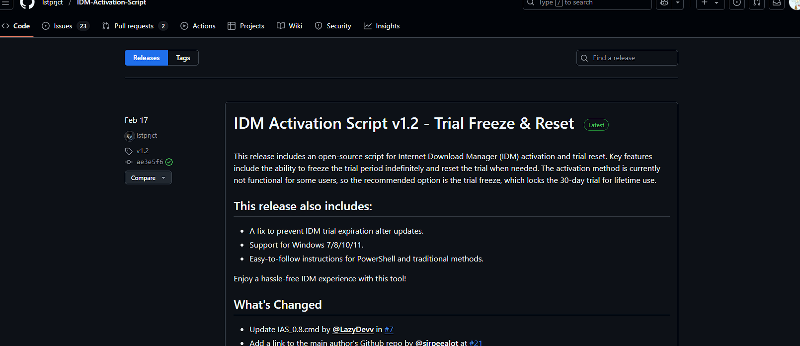
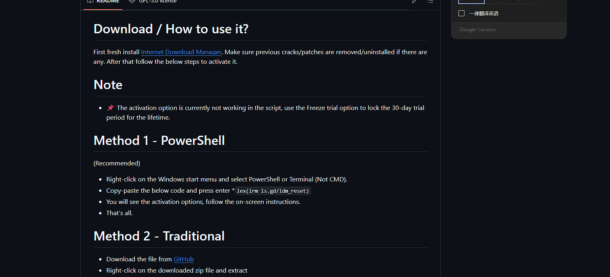

zhangyu
Idm正版脚本激活工具下载(使用)
Internet Download Manager（简称IDM）是一个用于Windows系统的下载管理器。
IDM可以让用户自动下载某些类型的文件，可将文件划分为多个下载点以更快下载，并行出最近的下载，方便访问文件。相对于其他下载管理器，具有独特的动态文件分割技术。
其优点在于，能分析下载地址中的实际地址，但若地址无效时则跳换成失效网页，当地址重新有效而无法恢复成原来的地址。
而缺点在于，必须设置分段的临时文件存放的磁盘位置，下载完成后再自动合并成一个完整的文件，同时删除临时文件（这种做法不同于其他下载软件预先分配一整块磁盘空间）。所以，
下载的如果是机密文件，就容易被数据恢复软件恢复，造成安全隐患。
IDM可被调用于Internet Explorer、Safari、Google Chrome、Microsoft Edge、Opera以及Mozilla Firefox（火狐）浏览器中。[1]
idm:idm.com


第一步:去idm的官网下载正版idm安装包,安装idm
第二步:去idm激活脚本的github开源网站
(2)
第三步:鼠标滚轮往下滑找到方法1(Method)Copy-paste the below code and press enter *iex(irm is.gd/idm_reset)复制iex(irm is.gd/idm_reset)这串代码到powershell打开idm脚本激活工具 之后按照提示激活就行了